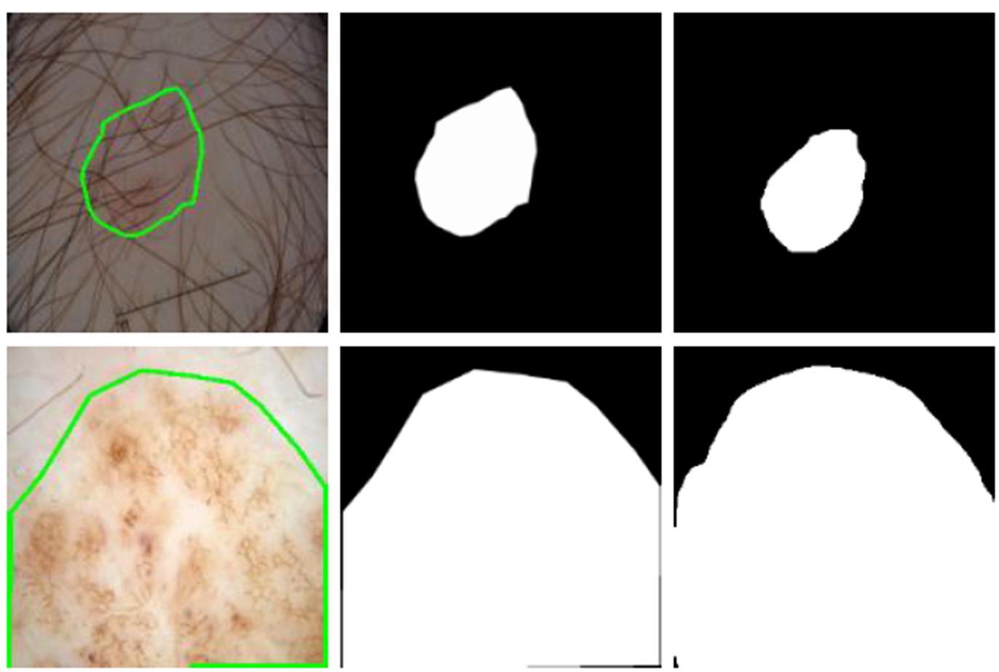
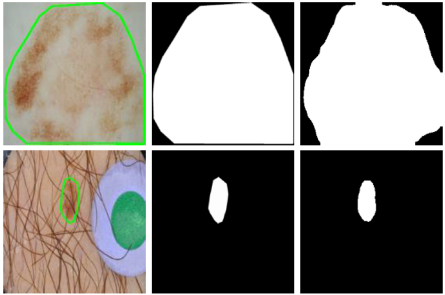
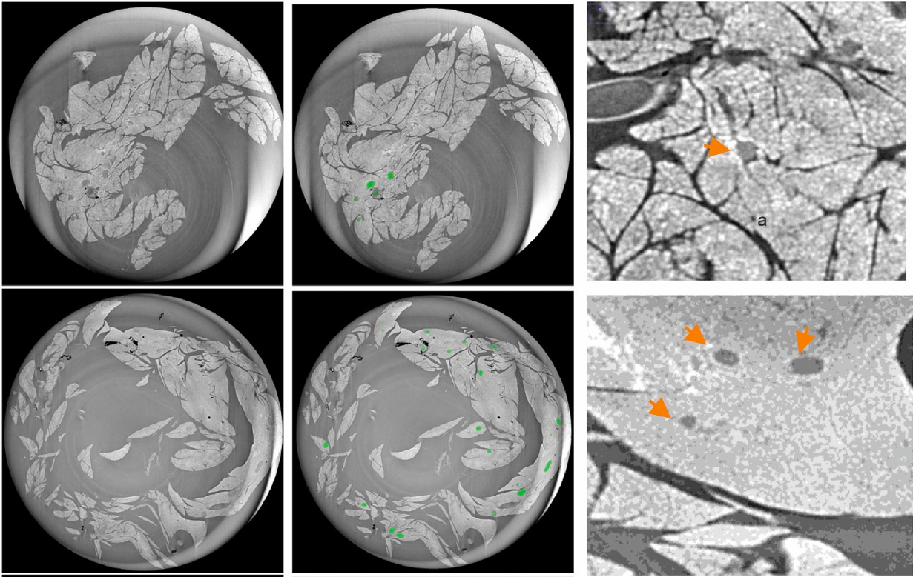
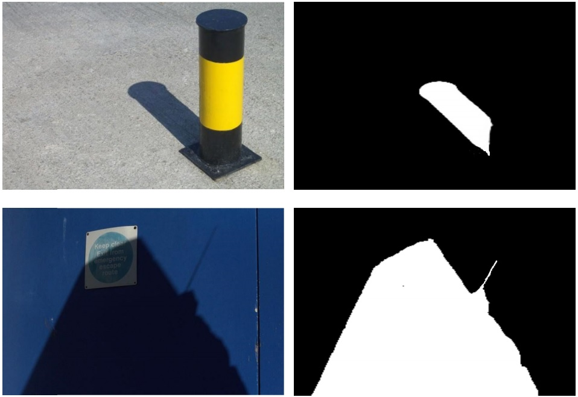

| Selected Publications |
|
SemanticAvatar: Human Surface Reconstruction Based on Semantically Consistent Biplane Features
Baofeng Zhou, Xianyong Fang, Linbo Wang, Zhengyi Liu
The Visual Computer, 2025. (Accepted)
|
|
Towards Finer Human Reconstruction for Single RGB-D Images
Yan Zhu, Yu Qian, Renlong Dai, Linbo Wang, Zhengyi Liu, Xianyong Fang
41st Computer Graphics International Conference (CGI 2024), 2024.
[Pdf]
|
|
Fine Back Surfaces Oriented Human Reconstruction for Single RGB-D Images
Xianyong Fang, Yu Qian, Jinshen He, Linbo Wang, Zhengyi Liu
Computer Graphics Forum (31th Pacific Conference on Computer Graphics and Applications, PG 2023), vol. 42, no. 7, pages 1-12, 2023.
[Pdf]
[Code] |
|
Sub-Band Based Attention for Robust Polyp Segmentation
Xianyong Fang, Yuqing Shi, Qingqing Guo, Linbo Wang, Zhengyi Liu
32nd International Joint Conference on Artificial Intelligence (IJCAI-23), pages 736-744, 2023.
[Pdf]
[Code]
[Supplementary] |
|
Parallel Matters: Efficient Polyp Segmentation with Parallel Structured Feature Augmentation Modules
Qingqing Guo, Xianyong Fang, Kaibing Wang, Yuqing Shi, Linbo Wang, Enming Zhang, Zhengyi Liu
IET Image Processing, vol. 17, no. 8, pages 2503-2515, 2023.
[Pdf] |
|  |
Robust Fusion for Skin Lesion Segmentation of Dermoscopic Images
Qingqing Guo, Xianyong Fang, Linbo Wang, Enming Zhang, Zhengyi Liu
Frontiers in Bioengineering and Biotechnology Bioprocess Engineering, vol. 11, p.310, 2023,
[Pdf] |
|  |
LGANet: Local-Global Augmentation Network for Skin Lesion Segmentation
Qingqing Guo, Xianyong Fang, Linbo Wang, Enming Zhang, Zhengyi Liu
20th IEEE International Symposium on Biomedical Imaging (ISBI 2023), pages 1-5, 2023,
[Pdf]
[Code] |
|  |
Reduced Volume of Diabetic Pancreatic Islets in Rodents Detected by Synchrotron X-Ray Phase-Contrast Microtomography and Deep Learning Network
Qingqing Guo, Abdulla AlKendi, Xiaoping Jiang, Alberto Mittone, Linbo Wang, Emanuel Larsson, Alberto Bravin, Erik Renström, Xianyong Fang, Enming Zhang
Heliyon, vol. 9, no.2, E13081, 2023,
[Pdf]
[Code] |
|
CCBLA: A Lightweight Phishing Detection Model Based on CNN, BiLSTM, and Attention Mechanism
Erzhou Zhu, Qixiang Yuan, Zhile Chen, Xuejian Li, Xianyong Fang
Cognitive Computation, vol. 15, pages 1320-1333, 2023,
[Pdf] |
|
Polyp Segmentation of Colonoscopy Images by Exploring the Uncertain Areas
Qingqing Guo, Xianyong Fang, Linbo Wang, Enming Zhang
IEEE Access, vol. 10, pages 52971-52981, 2022,
[Pdf]
[Code] |
|  |
Robust Shadow Detection by Exploring Effective Shadow Contexts
Xianyong Fang, Xiaohao He, Linbo Wang, Jianbing Shen
29th ACM International Conference on Multimedia, Pages 2927–2935, 2021, (Oral)
[Pdf]
[Code] |
|
Adaptively Feature Matching via Joint Transformational-Spatial Clustering
Linbo Wang, Li Tan, Xianyong Fang, Yanwen Guo, Shaohua Wan
Multimedia Systems, pages 1-11, 2021, [Pdf] |
|
DTOF-ANN: An Artificial Neural Network Phishing Detection Model Based on Decision Tree and Optimal Features
Erzhou Zhu, Yinyin Ju, Zhile Chen, Feng Liu, Xianyong Fang
Applied Soft Computing Journal, vol. 95, 106505, 2020, [Pdf] |
|
Text Image Deblurring using Kernel Sparsity Prior
Xianyong Fang, Qiang Zhou, Jianbing Shen, Christian Jacquemin, Ling Shao
IEEE Transactions on Cybernetics, vol. 50, no. 3, pages 997-1008, 2020
[Pdf]
[Code]
[Dataset] |
|
Single RGB-D Fitting: Total Human Modeling with an RGB-D Shot
Xianyong Fang, Jikui Yang, Jie Rao, Linbo Wang, Zhigang Deng
25th ACM Symposium on Virtual Reality Software and Technology, pages 24:1-24:11, 2019, (Oral)
[Pdf]
[Code]
[Video] |
 |
A Color-Pair Based Approach for Accurate Color Harmony Estimation
Bailin Yang, Tianxiang Wei, Xianyong Fang, Zhigang Deng, Frederick W. B. Li, Yun Ling, Xun Wang
Computer Graphics Forum (Pacific Graphics 2019), vol. 38, no. 7, pages 481-490, 2019 (Oral) [Pdf] |
 |
Blur Measurement for Partially Blurred Images with Saliency Constrained Global Refinement
Xianyong Fang, Qingqing Guo, Cheng Ding, Linbo Wang and Zhigang Deng
2018 Pacific-Rim Conference on Multimedia, pages 338-349, 2018
[Pdf]
[Code] |
|
Single-Image Distance Measurement by a Smart Mobile Device
Shangwen Chen, Xianyong Fang, Jianbing Shen, Linbo Wang, and Ling Shao
IEEE Transactions on Cybernetics, vol. 47, no. 12, pages 4451-4462, 2017
[Pdf]
[Code] |
 |
A Consistent Pixel-Wise Blur Measure for Partially Blurred Images
Xianyong Fang, Feng Shen, Yanwen Guo, Christian Jacquemin, Jian Zhou, Shanchun Huang
2014 IEEE International Conference on Image Processing, pages 496-500, 2014
[Pdf]
[Dataset] |
 |
Fast Window Fusion Using Fuzzy Equivalence Relation
Xianyong Fang; Hu Zhang; Jian Zhou
Pattern Recognition Letters, vol. 34, no. 6, pages 670-677, 2013
[Pdf] |
 |
Image Mosaic with Relaxed Motion
Xianyong Fang, Jiejie Zhu, Bin Luo
Signal, Image and Video Processing, vol. 6, no. 4, pages 647-667, 2012
[Pdf] |
|
WebContent Visualizer: A Visualization System for Search Engines in Semantic Web
Xianyong Fang, Christian Jacquemin, Fr¨¦d¨¦ric Vernier
International Journal of Information Technology & Decision Making, vol. 10, no. 5, pages 913-931, 2011
[Pdf] |